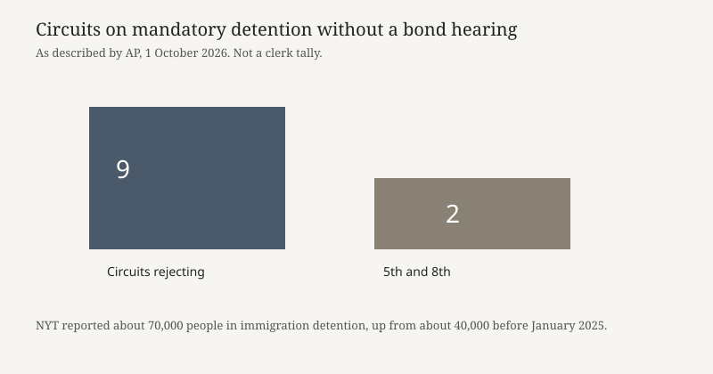

Washington · courts · 1 October 2026
The Supreme Court agreed to review a policy denying bond hearings to detained immigrants

What is agreed across desks
On Thursday, 1 October 2026, the Supreme Court agreed to review the Trump administration’s policy of denying bond hearings to immigrants the government is holding while removal cases proceed. The Associated Press, the Washington Post, and the New York Times all reported the grant of review. The question, as AP framed it, is whether immigrants who have been living in the United States have a right to a hearing on whether they should remain detained while they challenge possible deportation. The Court’s term formally begins the following Monday. This case is a merits grant, not an emergency-docket stay.
AP identified the case as that of Ricardo Aparecido Barbosa da Cunha, a citizen of Brazil. Authorities say he entered the United States illegally about two decades ago and applied for asylum in 2016. After a September 2025 arrest, an immigration judge treated his detention as mandatory, and he sought a bond hearing. The administration’s reading, adopted last year, treats a 1996 statute as requiring detention without bond for people who entered illegally, including people who have lived in the country for years. Previous administrations, the Times reported, generally allowed such people a chance to seek release if they were not a danger or a flight risk. The new reading is the departure. Whether the statute actually requires that departure is the legal question the Court accepted.
The circuit split is also agreed in outline. AP said judges on nine of eleven federal circuits have concluded that detaining immigrants without a bond hearing violates federal law, while the Fifth and Eighth Circuits have held that people accused of entering and remaining illegally must be detained while removal cases are pending. The Justice Department has called that split a disruption of orderly administration. The Times added that more than 500 district judges, and nine of eleven appeals courts to consider the issue, have rejected the administration’s rule. Those counts are newsroom tallies of published decisions, not a single clerk’s docket. They are large enough, across three desks, to show the policy is losing in most courts that have reached it.
What is only a quote
The administration’s claim that the split is “disrupting the orderly administration of immigration law” is an argument for certiorari, not a measurement of how many hearings were cancelled. The Times figure of about 70,000 people in immigration detention, up from about 40,000 before January 2025, is a stock number for the system, not a count of people held solely because of the July 2025 reinterpretation. A person can be in detention for a criminal ground, a recent border crossing, or the new no-bond rule. The 70,000 does not separate those causes. Politico, in a June filing story, wrote that judges had issued more than 9,300 rulings against the policy. That older tally is not repeated as a current total here.
Describing the policy as a “crackdown” or as part of an “aggressive deportation agenda” is framing. The checkable act on Thursday was a grant of review. No opinion on the merits issued. A grant does not predict the vote. The Court has already said it will fast-track a separate case on deportations to third countries, the Times noted. That is a neighboring docket, not this bond case.
Mechanism
Immigration detention and criminal pretrial detention are different systems. In removal proceedings an immigration judge, not a district judge, usually decides bond, and the statute sorts people into mandatory-detention categories and discretionary ones. The fight is about which box covers someone who entered without inspection years ago and was later arrested in the interior. If the administration’s box is right, the hearing never happens. If the circuits that rejected that box are right, the person can ask for release and the government can still argue danger or flight. Habeas petitions in district court have been the practical route while the circuits disagreed, which is why the district-judge count is so high. A Supreme Court ruling would collapse that patchwork. Until then, the Fifth and Eighth Circuits and the other nine are applying different rules to the same statute.
Certiorari is a selection decision. The Court takes a small share of petitions, often because lower courts conflict. The government’s petition asked the justices to resolve that conflict. Acceptance means four justices wanted to hear it. It does not mean five justices agree with the government. The named petitioner’s facts — Brazil, a claimed illegal entry two decades ago, an asylum application in 2016, an arrest in September 2025 — are the vehicle. A ruling will be written more broadly than one biography, but the biography is what the record contains.
What the story is not
It is not a holding that bond hearings are required, or that they are forbidden. It is not a finding that Barbosa da Cunha will be released. It is not a count of how many of the 70,000 detainees would get a hearing if the government loses. It is not the third-country removal case already on a faster track. And it is not evidence about any particular workplace raid; those operations may feed the detention population, but Thursday’s order is about the statute applied after arrest.

Source articles and scores
| Outlet | Headline | T | N | C |
|---|---|---|---|---|
| Associated Press | Supreme Court grants review of Trump administration’s mandatory detention policy for immigrants | 95 | 0 | 98 |
| The Washington Post | Supreme Court to scrutinize ICE’s mandatory detention policy for immigrants | 92 | -8 | 90 |
| The New York Times | Supreme Court, Taking On Trump Immigration Agenda, Will Review Migrant Detention Policy | 91 | -6 | 88 |